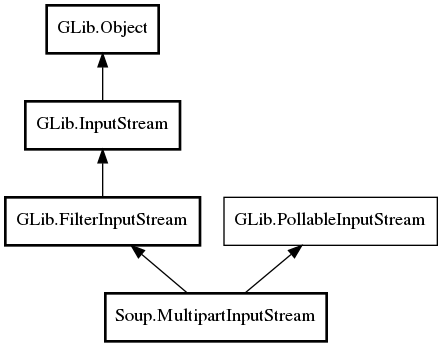

Soup.MultipartInputStream Reference Manual
Packages
libsoup-2.4
Soup
MultipartInputStream
message
MultipartInputStream
get_headers
next_part
next_part_async
MultipartInputStream
Object Hierarchy:

Description:
public
class
MultipartInputStream
:
FilterInputStream
,
PollableInputStream
Namespace:
Soup
Package:
libsoup-2.4
Content:
Properties:
public
Message
message
{
construct
set
;
owned
get
; }
Creation methods:
public
MultipartInputStream
(
Message
msg,
InputStream
base_stream)
Methods:
public
unowned
MessageHeaders
get_headers
()
public
InputStream
next_part
(
Cancellable
? cancellable =
null
)
throws
Error
public
async
InputStream
next_part_async
(
int
io_priority,
Cancellable
? cancellable)
throws
Error